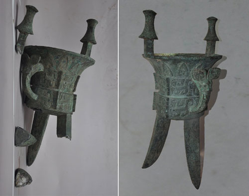

保护概况驾驶舱
数据更新时间：2024-06-12 14:30:00
馆藏文物总量
5,248
件
正在修复
128
项目
高风险文物
317
件
公众访问热度
350
次
文物健康指数分布
智能诊断报告
⚠ 预警： 当前轻微破损文物占比偏高，主要集中在露天石刻与南方潮湿区域的纸质文物。建议加强库房恒温湿系统升级。
待办优先级
- 一级濒危文物抢救 12 件
- 即将到期的外借展览 3 场
- 库房环境异常警报 0 次
文物分布地图
修复项目管理
风险预警中心
数据归档库
从“抢救性”向“预防性”跨越
随着《“十四五”文物保护和科技创新规划》的深入实施，我国文物保护工作已进入精准化、数字化的新阶段。我们不再仅仅关注破损后的修复，更注重通过环境监测、数字化扫描等手段，防患于未然。
- 全流程数字化监测： 对石窟、壁画温度、湿度进行24小时监控。
- AI 病害识别： 利用图像识别技术自动标记文物表面的细微裂纹。
- 云端数据共享： 打破信息孤岛，实现全国文物数据互联互通。

精湛修复工艺
传统匠心与现代科技的完美融合
无损检测
X光探伤与多光谱分析
清理除锈
物理打磨与化学试剂结合
拼接补配
AI 辅助碎片拼对与3D打印
随色封护
矿物颜料全色与表面封层